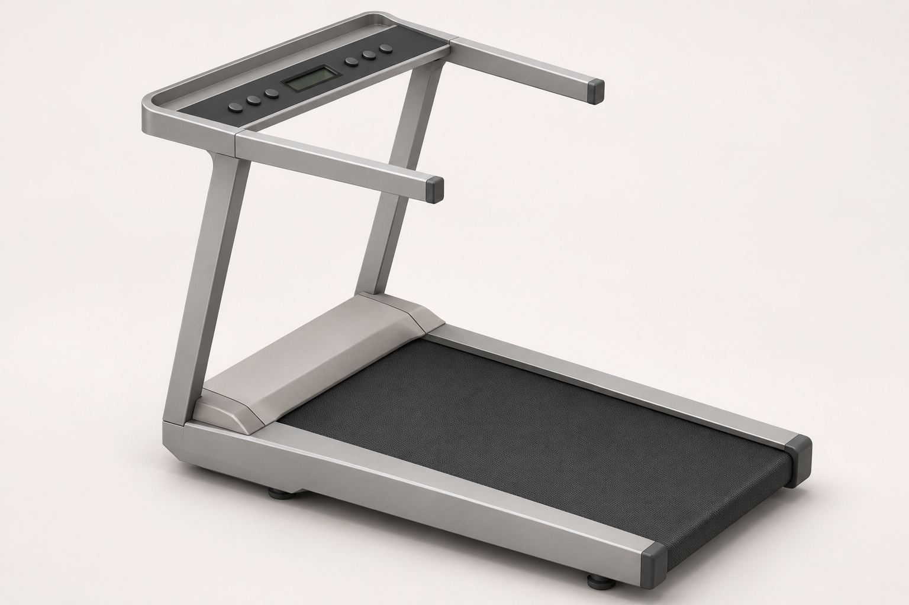

Linear 凌序 原草图与本轮生成图


对应回同事的工作
横向机头罩及两端过渡；双直立柱；倾斜的小屏与圆按钮面板；直扶手与端盖；侧裙和尾端包边。
本轮调整
统一边缘圆角、收整接缝与端盖，采用克制的灰色表面表达。按钮数量、缝线和材质细节属于生成补全，尚未选定。
为了先保住同事草图的设计，这张保留了凸起机头，尚未合入全域跑台目标。机构、尺寸、折叠、爬升和成本没有由此得到验证。
本轮先修正凌序一张。保留原稿的机头、双立柱、面板与扶手关系，再整理边缘、接缝和表面质感。生成图待评审。

横向机头罩及两端过渡；双直立柱；倾斜的小屏与圆按钮面板；直扶手与端盖；侧裙和尾端包边。
统一边缘圆角、收整接缝与端盖，采用克制的灰色表面表达。按钮数量、缝线和材质细节属于生成补全，尚未选定。